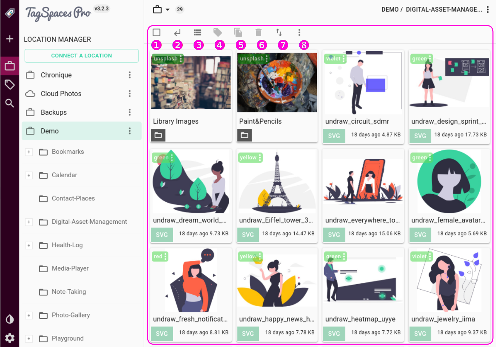
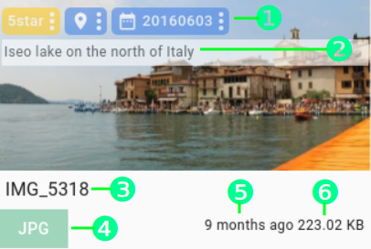

Grid perspective (default)
Table of Contents
- Main Toolbar
- Grid view
- List view
- File context menu
- Folder context menu
- Importing files with drag and drop
- Color coded file extensions
This perspective is optimized for general browsing through file and folder structures while supporting some common file management operations such as:
- Tagging file and folders
- Renaming file and folders
- Deleting file and folders
- Copying files
- Moving files
The most common way of presenting files in a folder is in grid and list views. Both views are supported in the build-in default perspective. In the following screenshot you can see the grid view.

Hint: The violet colored rectangle shows the area in TagSpaces which is typically occupied by the perspectives.
Main Toolbar
The toolbar of the perspective is located in the top part of the perspective's, see the rectangle from the previous screenshot. The toolbar includes the following buttons and sub menus.
(1) Toggles File Selection - will mark every file in the perspective as selected or unselected.
(2) Open parent folder - will navigate to the parent folder of the current folder, if it is part of the current location. This action can be achieved also by using the BACKSPACE key of the keyboard.
(3) Switches the views - toggles between the grid and list views of this perspective.
(4) Add/Remove tags will allow you to manage tags on selected files. (This options is only available when there is an active selection, and works on multiple files simultaneously.) To learn more about how tagging works, refer to the Tagging -> Tagging using context menus section.
(5) Copy/move files will allow you to copy or move the currently selected files. This option is only available when there is an active selection, and works on multiple files simultaneously. Selecting this option will present you with the Move or Copy File(s) dialog. After specifying the target directory (which can be anywhere on the file system, even outside your connected locations), you can choose to move or copy the file(s) by pressing the corresponding button.

(6) Delete files - will open a dialog where you can confirm the deletion of the selected files.
(7) Sort files - open a menu with following options. There is an arrow in front of one these options, it indicates how the files and folders in the perspective are sorted.
- Title - will sort the file alphabetically by name.
- Size - will sort the files by their size.
- Date Modified - will sort the files by the date of the last modification.
- First Tag - will sort the files alphabetically by the title of their first tag.
- File Ext. - will sort the files alphabetically by their file extension.
- Random - will sort the files in a random way. This could be useful if TagSpaces is used as music player and you want to hear audio tracks in a random order.
Hint: Clicking a second time on same sorting option will reverse the sort order. By sorting option random this will lead to a new randomization of the file order.
Hint: Sort order is preserved after navigation to a new folder.
- (8) More options - will open a sub menu where you can choose among the following options:
- Show/Hide Subfolders - Toggles the visibility of folders in the perspective
- Toggle thumbnail modes - Toggles between the two modes(cover and contain) of displaying thumbnails, see bellow for more details.
- Compact mode - A condensed display mode, where the area representing a file or folder takes a smaller place the default mode. Some of the information available in the following modes may be hidden here.
- Default mode - The default display mode.
- Large mode - A display mode, where the area representing a file or folder takes a larger place the default mode.
- Single click opens file internally - Single click or tap on a file will open it in the applications
- Single click opens file externally - Single click or tap on a file will open it in the default external application for your operating system.
- Single click selects only - Single click or tab on a file will just select it, without opening it.
Hint: Double click on a file will always open it in the preview area. Double click on a folder will navigate to this folder.
Grid view
A common arrangement found in file browsing applications is the grid. The grid view offers a resizable grid with thumbnail previews of certain file formats, for quick and effective browsing. The files and folder are represented by user interface element called cards.
The following screenshot shows the grid view in its compact mode. The thumbnails are in the so called cover mode, covering the whole area defined for the thumbnail. In order to achieve this effect this mode will more likely cut some of the border areas of the thumbnail's image.

The next screenshot shows the grid view in its large mode. The thumbnails here are in the contain mode, which displays the whole thumbnail in the thumbnail area of the card, eventually causing transparent bars to appear on the left and right side of the thumb image.

Hint: Switching the thumbnail mode is triggered by the Toggle thumbnails mode menu item of the more options menu from the perspective's toolbar.
File Card
Each card on the grid can represent the following information. In area (1) the tags added to this file will appear. If the file has a description it will be displayed in section (2). Behind the number (1) and (2) a thumbnail of the file (if available) will be displayed. In (3) you will find the title of the file. Title is the part of the file name without the file extension. In section (4) you will find the file extension with appropriate color defined in the File types tab from the settings. Bellow number (5) the amount of time elapsed since the last time the file was modified will be displayed. Hovering this area with the mouse pointer will show a tooltip with exact date and time of the file modification. Bellow number (6) the size of the file can be found. Hovering this are will display the file size in bytes.

Hint: The tags are dimmed on the cards by default, which might render them unreadable, when there is a file preview available. To improve readability, hover your mouse over the extension, or the tags to make them more opaque.
Note pro: Defining descriptions for file is feature available in the Pro and the Enterprise versions of the app.
Folder Card
The folder card show basically similar information as the file card. In area (1) the tags added to this folder will appear. If the folder has a description it will be displayed in section (2). Behind the number (1) and (2) a thumbnail of the folder will be displayed. In (3) you will find the name of the folder. Instead on the file extension in section (4) a folder icon will be shown. If the folder has a custom color it is also visible on the card behind number (3) and (4).
Note pro: Defining descriptions and thumbnails for folders are features available in the Pro and the Enterprise versions of the app.
List view
The list view is a classic way to represent list of items such folders and files. It also features the three representation modes: compact, default and large.

The following information can be found on every row representing a file on this view:
File extension - A color coded icon, representing the file type. Scroll down to Color coded file extensions to learn more about this feature.
Folder icon - On rows representing folders instead of the file extension a folder icon is displayed.
Title - The file's title is the filename without the extension or any tag information.
Description - If the file/folder have a description it will be displayed also here.
Tags - All the tags that are applied to the file will appear here, with the right background and font color. To learn more about tag colors, refer to the Tag Library section.
Size - This is the file size in a human readable format.
Date modified - The time the file had been last modified.
Selecting files
File in the perspective can be selected by holding the CTRL key and clicking on the file or the folder. You can select a range of files by holding the SHIFT key, clicking on a file 1 and then clicking on file 2. This way make all file between file 1 and file 2 to be selected.
To select or deselect all the listed files, you can use the first button from the perspective's toolbar.
File context menu
The file context menu can be accessed by right-clicking a file in either perspective. It will offer some common file management options.

Open file - will split the main area of TagSpaces into two, and open the file in the right pane. TagSpaces offers viewers for various file types, which can be opened inside the application. To learn more bout supported types, refer to the Viewing Files section.
Open File Natively - will open the file in whatever application is associated with the file type in your operating system.
Show in File Manager - will show this file in the default file manager of your operating system
Add / Remove Tags - will open a dialog where you can add or remove multiple tag to this file.
Rename File - will open the file rename dialog, where you can change the name of the file.
Move / Copy File - will open a dialog, where you can choose where this file should be moved or copied
Delete - will open a dialog, where you can confirm the deletion the file
Folder context menu
The folder context menu can be accessed by right-clicking on a folder the perspective. It will offer some common folder management options.

Open Directory - will navigate to the selected directory.
Rename directory - will open the directory rename dialog, where you can change the name of the folder.
Delete directory - will open a dialog, where you can confirm the deletion the directory
Show in File Manager - will open this directory in the default file manager of your operating system
Extract Content - will start the extraction of special data such as geo-locations from the files in this folder
Directory Properties - will open the properties of this folder in the preview area (most right panel) of the application
Drag to move within TagSpaces
An alternative way to move files into another folder is to drag it icon onto a folder on the Folder navigation area on the left panel. When the folder lights up with a greenish hue, just release the dragged item, and the file will be immediately moved into that folder.
Hint: You can access sub folders of any folder displayed in the hierarchy, by clicking the black folder icon next to its name.

Importing files with drag and drop
Besides dragging files from the File Browser Area to a sub folder, TagSpaces allows you to add files the currently opened folder by dragging and dropping it from the operating system, or its default file management application.
To do this, just grab a file icon with your mouse, and drag it to TagSpaces' application.

Color coded file extensions
In the grid and list perspectives, color coded file extensions are supported, allowing for a better visual recognition of the file type. For the most common file extensions, custom colors have been defined, to be displayed on the extension buttons found on the file rows or cards.

Hint: The colors of the supported file types can configured in the File Types of application settings dialog.